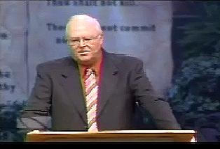

http://biblelight.net
A Sunday Law IS Coming!
"On August 14, I will proudly join with evangelicals and Jews in Justice Sunday II (I participated in the first event in April). We may be of different faiths, but it is not our theological differences that matter: we are united on the same side of the culture war against those who would like to censor the public expression of religion and drive people of faith out of the public square. Radical secularists want us to sit back and relax and leave the driving to them. But I have news for them: we will be disobedient. Moreover, we fully intend to take control of the wheel. (Lucky for them, we believe in something they don’t—tolerance. Which is why we won’t run them over.)" -- The Attempt to Derail John Roberts By William A. Donohue, Ph.D., Catholic League President.

William Donahue speaking at Justice Sunday IIYeah, the Left is gettin' nervous, you know why? I got news for them. Remember that song by Bob Dylan that goes like this - “the times they are a changing?” They are changing, and the vector of change is moving our way, it’s not going their way any longer.
Let me give you an example here of what I’m talking about. Think of it [as a] metaphor – the culture is like several roads and that we’re all on a big bus. Well we know who’s been driving the bus – it hasn’t been us. Matter of fact, the Left who’s been driving the bus, they’re so sweet they allow us to sit in the back of the bus, that’s how tolerant they are. Right? Now they’ve been driving this bus down the wrong road for a long time. Now I’m saying to you people it’s time that we move to the front of the bus and that we took command of the wheel. That’s what I want to see. (applause)
I’m tired of being told that somehow if you have a religious informed conscience, that somehow you’re a second class citizen, you know, leave the driving to these guys. We’ve seen what they’ve done and as far as I’m concerned, if we’re going to make some progress in the country we're goin' to have to discover what our roots are. We’re not imposing any kind of a strict construction idea where everybody has to go off to church on Sunday.* I mean they make it sound like as if we’re the theocrats. All we are are decent people who simply say this: that religion is a focal point in our lives. Ninety-four percent of the American people believe in God, 85% in this country are Christians. It’s not a matter of shoving our ideas down somebody’s throat. It’s a matter of us saying that we want to stand up and we want to be counted and we’re tired of being second class citizens to these people and we’re not going to take it any longer.
Thank you. (Standing ovation)
-- William Donohue speaking at Justice Sunday II. (Video -Windows Media - 19 Mb) (Transcript)
* Perhaps not now, but rest assured, they will do just exactly that. I think it worth noting that behind the podium at Justice Sunday II was a large set of the tables of the ten commandments, but the Sabbath commandment was totally obscured by plants across the bottom (as was the commandment on coveting).
Also speaking at Justice Sunday II, Bishop Harry Jackson Jr., pastor of the 2,000-member Hope Christian Church in Bowie, Maryland said:
"I believe that what God is doing today is calling for the black church to team with the white evangelical church and the Catholic Church and people of moral conscience. And in this season, we need to begin to tell both [major political] parties, Listen, it's our way or the highway."
"We're not going to just sit back and let America go down this ramp of moral decline. I'm not black alone; I am an American -- and beyond that, I am a Christian. You and I can bring the rule and reign of the cross to America -- and we can change America on our watch together."
Now read the following, published nearly 120 years ago:
The wide diversity of belief in the Protestant churches is regarded by many as decisive proof that no effort to secure a forced uniformity can ever be made. But there has been for years, in churches of the Protestant faith, a strong and growing sentiment in favor of a union based upon common points of doctrine. To secure such a union, the discussion of subjects upon which all were not agreed--however important they might be from a Bible standpoint--must necessarily be waived.
Charles Beecher, in a sermon in the year 1846, declared that the ministry of "the evangelical Protestant denominations" is "not only formed all the way up under a tremendous pressure of merely human fear, but they live, and move, and breathe in a state of things radically corrupt, and appealing every hour to every baser element of their nature to hush up the truth, and bow the knee to the power of apostasy. Was not this the way things went with Rome? Are we not living her life over again? And what do we see just ahead? Another general council! A world's convention! Evangelical alliance, and universal creed!"--Sermon on "The Bible a Sufficient Creed," delivered at Fort Wayne, Indiana, Feb. 22, 1846. When this shall be gained, then, in the effort to secure complete uniformity, it will be only a step to the resort to force.
When the leading churches of the United States, uniting upon such points of doctrine as are held by them in common, shall influence the state to enforce their decrees and to sustain their institutions, then Protestant America will have formed an image of the Roman hierarchy, and the infliction of civil penalties upon dissenters will inevitably result.The beast with two horns "causeth [commands] all, both small and great, rich and poor, free and bond, to receive a mark in their right hand, or in their foreheads: and that no man might buy or sell, save he that had the mark, or the name of the beast, or the number of his name." Revelation 13:16, 17. The third angel's warning is: "If any man worship the beast and his image, and receive his mark in his forehead, or in his hand, the same shall drink of the wine of the wrath of God." "The beast" mentioned in this message, whose worship is enforced by the two-horned beast, is the first, or leopardlike beast of Revelation 13--the papacy. The "image to the beast" represents that form of apostate Protestantism which will be developed when the Protestant churches shall seek the aid of the civil power for the enforcement of their dogmas. The "mark of the beast" still remains to be defined.
... when Sunday observance shall be enforced by law, and the world shall be enlightened concerning the obligation of the true Sabbath, then whoever shall transgress the command of God, to obey a precept which has no higher authority than that of Rome, will thereby honor popery above God. He is paying homage to Rome, and to the power which enforces the institution ordained by Rome. He is worshipping the beast and his image. As men then reject the institution which God has declared to be the sign of his authority, and honor in its stead that which Rome has chosen as the token of her supremacy, they will thereby accept the sign of allegiance to Rome--"the mark of the beast." And it is not until the issue is thus plainly set before the people, and they are brought to choose between the commandments of God and the commandments of men, that those who continue in transgression will receive "the mark of the beast." -- Great Controversy, by Ellen White, 1888 edition, pgs. 444-445, 449.
|
http://biblelight.net |